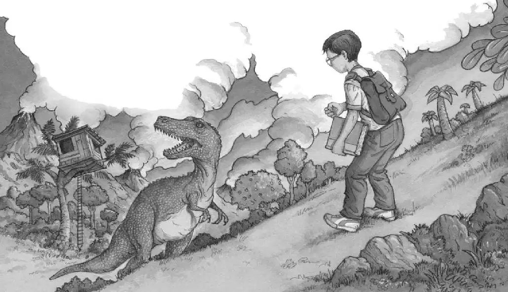

“Run, Annie! Run!” cried Jack. “Run to the tree house!”
Jack and Annie dashed down the hill together. They ran through the tall grass and ferns and past the Pteranodon.
They scrambled up the rope ladder and tumbled into the tree house.
Annie leaped to the window.
“It’s going away!” she said, panting.
Jack pushed his glasses into place. He looked out the window with Annie.
The Tyrannosaurus was wandering off.
But then the monster stopped and turned around.
“Duck!” said Jack.
The two of them ducked their heads.
After a long moment, they peeked out the window again.
“Coast clear,” said Jack.
“Yay,” whispered Annie.
“We have to get out of here,” said Jack.
“You made a wish before,” said Annie.
“Right,” said Jack. He took a deep breath. “I wish we could go back to Frog Creek!”
Nothing happened.
“I said I wish—” started Jack.
“Wait,” said Annie. “You were looking at a picture in the dinosaur book. Remember?”
“Oh, no, I left the book and my pack on the hill!” said Jack. “I have to go back!”
“Forget it,” said Annie.
“I can’t,” said Jack. “The book doesn’t belong to us. Plus my notebook with all my notes is in my pack. And my—”
“Okay, okay!” said Annie.
“I’ll hurry!” said Jack. He climbed quickly down the ladder and leaped to the ground.
Jack raced past the Pteranodon, through the ferns, through the tall grass, and up the hill.
He looked down.
His pack was lying on the ground. On top of it was the dinosaur book.
But now the valley below was filled with Anatosauruses. They were all standing guard around the nests.
Where had they been? Did fear of the Tyrannosaurus send them home?
Jack took a deep breath. Ready! Set! Go! he thought.
He charged down the hill. He ran to his backpack. He scooped it up. He grabbed the dinosaur book.
Jack heard a terrible tuba sound! Then another, and another! All the Anatosauruses were bellowing at him!
Jack took off.
He raced up to the hilltop.
He started down the hill.

He stopped.
The Tyrannosaurus rex was back! It was standing between Jack and the tree house!